lorenz_full3_additive_p30_nearid_tf__lc_x_obsnoisescale_sweep_20260429T163249Z__stage_aProject: Lorenz_INDall_N1_D1_NormTrue_T3__JacobianODE
Launched: 2026-04-29T16:35:26Z
Completed: 2026-04-29T19:15:26Z
Outcome: complete_clean
Git: latent-JacobianODE @ 3195286
Expected runs: 21
lorenz_full3_additive_p30_nearid_tf__lc_x_obsnoisescale_sweepDescription
Fully-observed Lorenz (3 dims, no delay embedding). Monolithic CouplingEncoder (additive coupling, 8 layers, hidden_dim=128), near_identity_std=1e-3, final_perm_identity=true. 21-cell sweep over 7 LC x 3 obs_noise_scale. TF-coupled LR schedule (k_scale=1). Two-stage protocol with dual-checkpoint (primary ES patience=5, shadow-freeze patience=2). Same recipe as the matched WMTask 128->128 sweep.
Hypothesis
If the orig recipe (TF-coupled LR, mean ~5e-5 effective in the high-LR phase) is portable, Lorenz 3->3 should hit good Lyapunov spectrum recovery across the LC x obs_noise grid without spectrum compression in Stage B. Recovery of all three Lyapunov exponents (positive, zero, negative) within ~30% of empirical is the success bar — same standard the existing lorenz_full_additive_mse_p30 sweep was held to. This sweep is the matched-recipe Lorenz control for the WMTask sweep.
Success criteria
Swept axes (3): data.postprocessing.generalized_variance, training.lightning.loop_closure_weight, training.lightning.obs_noise_scale
Chosen run (by best_traj_loss): q47ycjpr — traj_loss=0.00014, MASE=0.1317, R²=0.9998, LC loss=0.003, epoch=18.0
Swept-axis values at chosen run: data.postprocessing.generalized_variance=0.160068 · training.lightning.loop_closure_weight=1.0e-04 · training.lightning.obs_noise_scale=0
Runs analyzed: 21 (expected 21)
| run_idx | run_id | data.postprocessing.generalized_variance |
training.lightning.loop_closure_weight |
training.lightning.obs_noise_scale |
best_traj_loss | best_MASE | R² | LC loss | epoch |
|---|---|---|---|---|---|---|---|---|---|
| 9 | q47ycjpr |
0.160068 | 1.0e-04 | 0 | 0.00014 | 0.1317 | 0.9998 | 0.003 | 18.0 |
| 0 | qn6p2c1m |
0.160068 | 0 | 0 | 0.00017 | 0.1185 | 0.9998 | 0.063 | 18.0 |
| 3 | osqi3hmt |
0.160068 | 1.0e-06 | 0 | 0.00017 | 0.1148 | 0.9998 | 0.047 | 18.0 |
| 6 | r7z6oydd |
0.160068 | 1.0e-05 | 0 | 0.00021 | 0.1566 | 0.9998 | 0.016 | 16.0 |
| 12 | aab3qrqb |
0.160068 | 0.001 | 0 | 0.00022 | 0.1547 | 0.9998 | 0.001 | 17.0 |
| 10 | s2ypfbt9 |
0.160068 | 1.0e-04 | 0.01 | 0.00038 | 0.2460 | 0.9996 | 0.005 | 19.0 |
| 4 | 8pm7q5ep |
0.160068 | 1.0e-06 | 0.01 | 0.00051 | 0.2966 | 0.9994 | 0.057 | 17.0 |
| 13 | 6qx5sc65 |
0.160068 | 0.001 | 0.01 | 0.00051 | 0.2881 | 0.9994 | 0.004 | 18.0 |
| 1 | ce88xynz |
0.160068 | 0 | 0.01 | 0.00061 | 0.3337 | 0.9993 | 0.063 | 17.0 |
| 7 | y18ij9b8 |
0.160068 | 1.0e-05 | 0.01 | 0.00063 | 0.2893 | 0.9993 | 0.027 | 17.0 |
| 17 | z6pczr73 |
0.160068 | 0.01 | 0.05 | 0.00096 | 0.4225 | 0.9990 | 0.001 | 17.0 |
| 15 | ifvbqk6b |
0.160068 | 0.01 | 0 | 0.00117 | 0.3600 | 0.9987 | 0.001 | 18.0 |
| 5 | c5n2zx92 |
0.160068 | 1.0e-06 | 0.05 | 0.00147 | 0.5803 | 0.9984 | 0.542 | 18.0 |
| 11 | v0ztlqn8 |
0.160068 | 1.0e-04 | 0.05 | 0.00209 | 0.7910 | 0.9978 | 0.157 | 7.0 |
| 8 | kftmy39d |
0.160068 | 1.0e-05 | 0.05 | 0.00249 | 1.0155 | 0.9973 | 0.532 | 10.0 |
| 14 | wx2c9gou |
0.160068 | 0.001 | 0.05 | 0.00276 | 0.9607 | 0.9970 | 0.041 | 5.0 |
| 2 | 9job0lly |
0.160068 | 0 | 0.05 | 0.00281 | 0.6887 | 0.9969 | 0.944 | 12.0 |
| 16 | 5fhrbrqg |
0.160068 | 0.01 | 0.01 | 0.00312 | 0.7810 | 0.9967 | 0.001 | 10.0 |
| 18 | laawv52d |
0.160068 | 0.1 | 0 | 0.00767 | 0.9516 | 0.9917 | 0.000 | 19.0 |
| 19 | qfvo518m |
0.160068 | 0.1 | 0.01 | 0.02891 | 3.0270 | 0.9689 | 0.008 | 19.0 |
| 20 | gbjo0xqk |
0.160068 | 0.1 | 0.05 | 0.10588 | 5.4800 | 0.8888 | 0.010 | 2.0 |
obs_noise_scale| obs_noise_scale | Best LC weight | Best traj loss | MASE at best | R² | LC loss | epoch |
|---|---|---|---|---|---|---|
| 0.0 | 1.0e-04 | 0.00014 | 0.1317 | 0.9998 | 0.003 | 18.0 |
| 0.01 | 1.0e-04 | 0.00038 | 0.2460 | 0.9996 | 0.005 | 19.0 |
| 0.05 | 1.0e-02 | 0.00096 | 0.4225 | 0.9990 | 0.001 | 17.0 |
| Criterion | Verdict | Note |
|---|---|---|
| All 21 cells train without divergence | Unknown | |
| es2-best.ckpt and es5-best.ckpt both saved per cell | Unknown | |
| Best run's predicted Lyapunov spectrum within ~30% of empirical | Unknown | |
| Lyapunov spectrum NOT compressed in Stage B vs Stage A | Unknown | |
| Result shape is consistent with the matched WMTask sweep (LC dependence, init effect) | Unknown |
Automated verdicts use simple numeric-threshold parsing and may mis-classify qualitative criteria. The Discussion section below takes precedence.
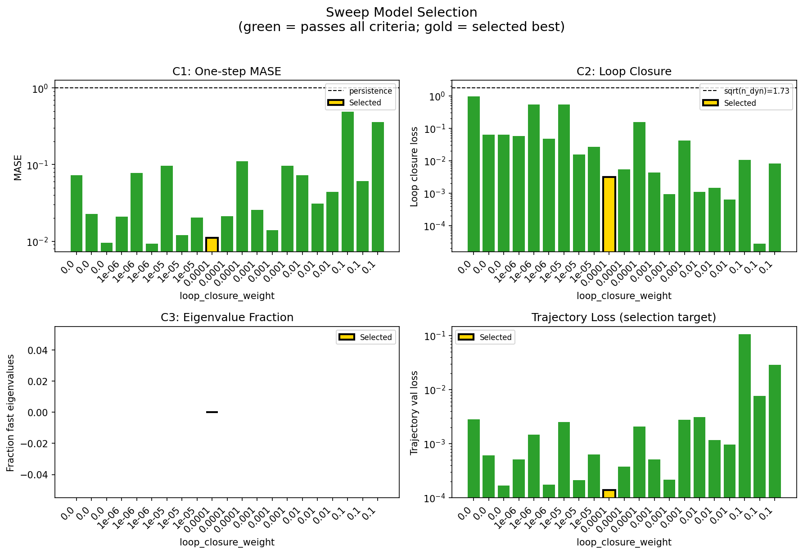
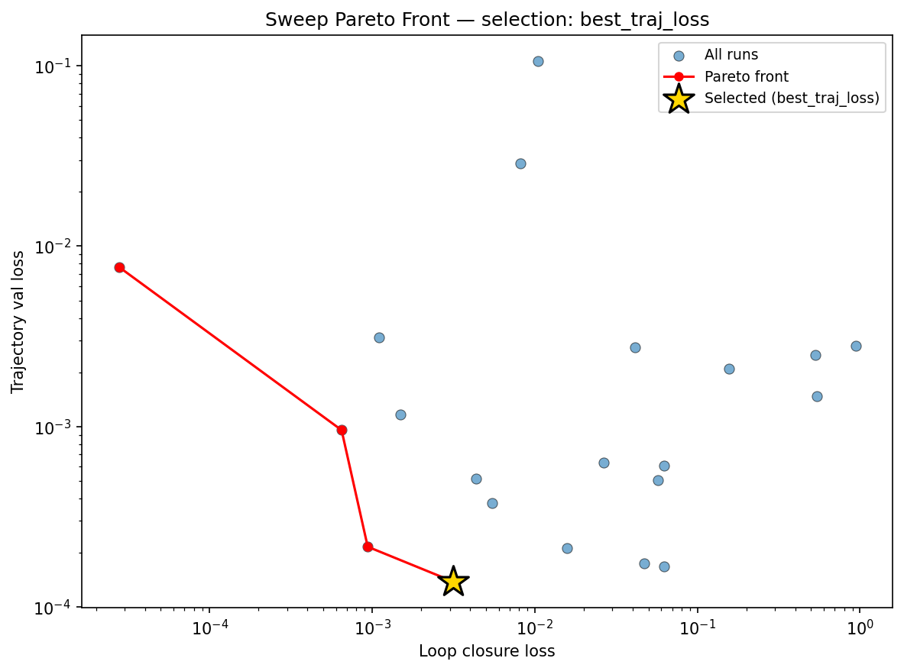
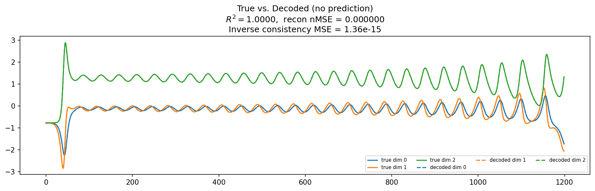
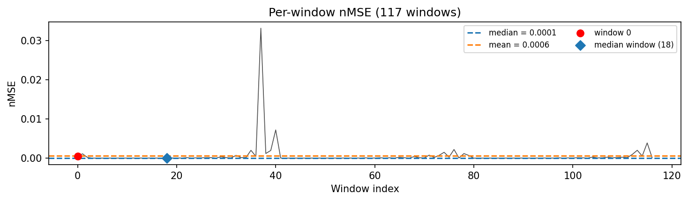
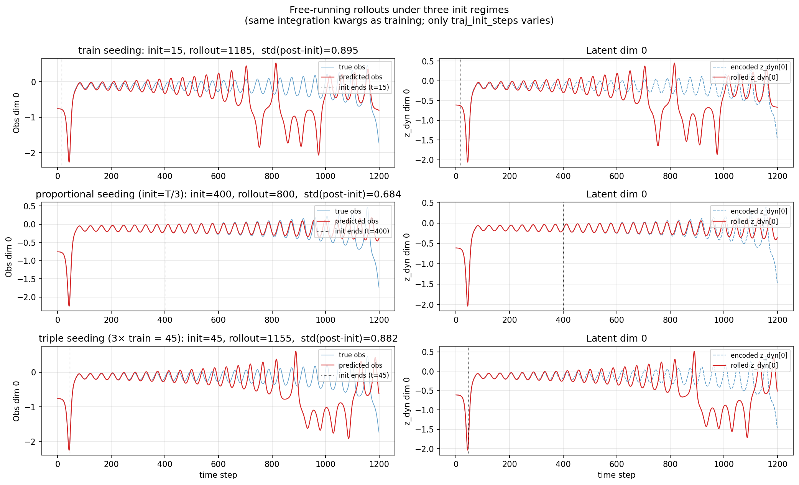
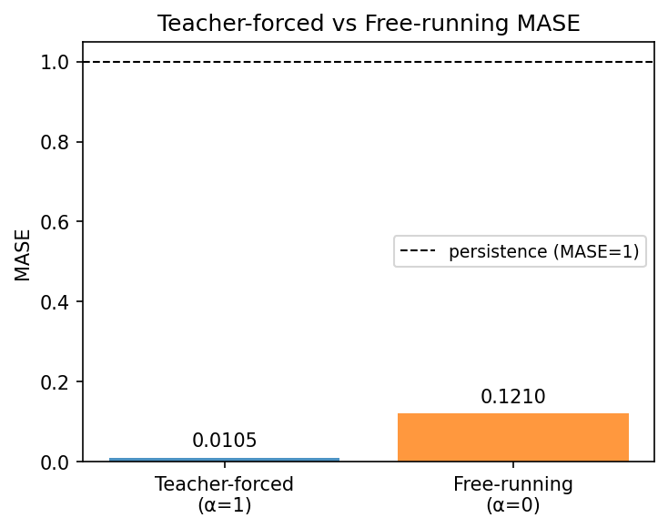
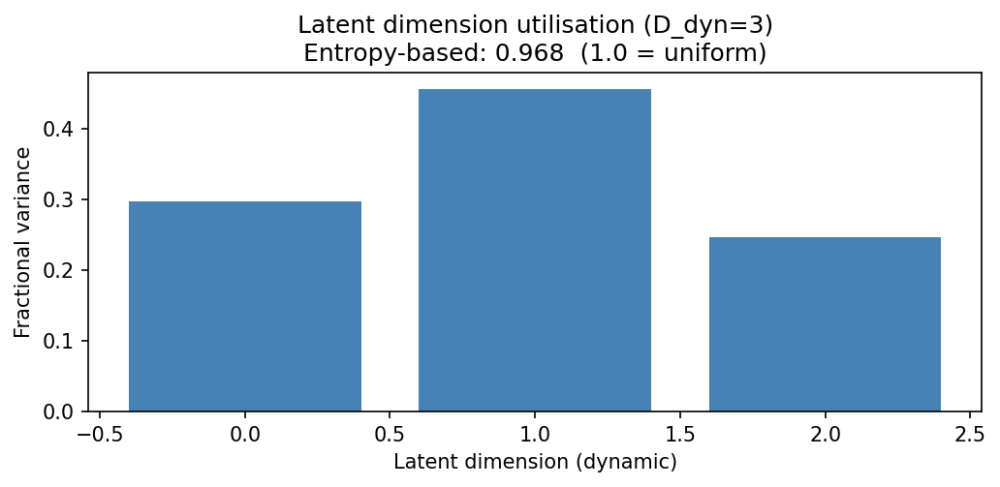
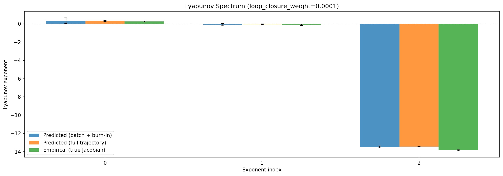
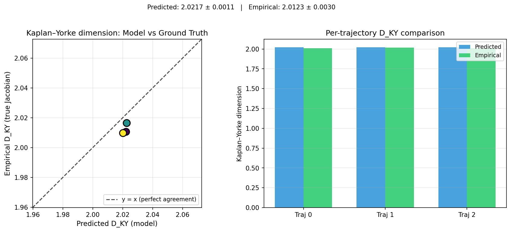
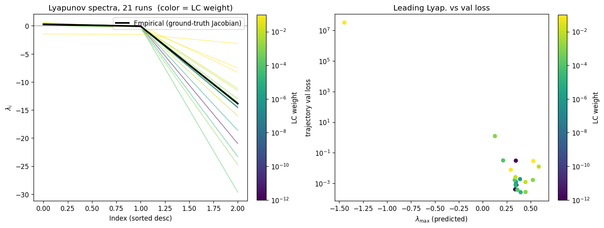
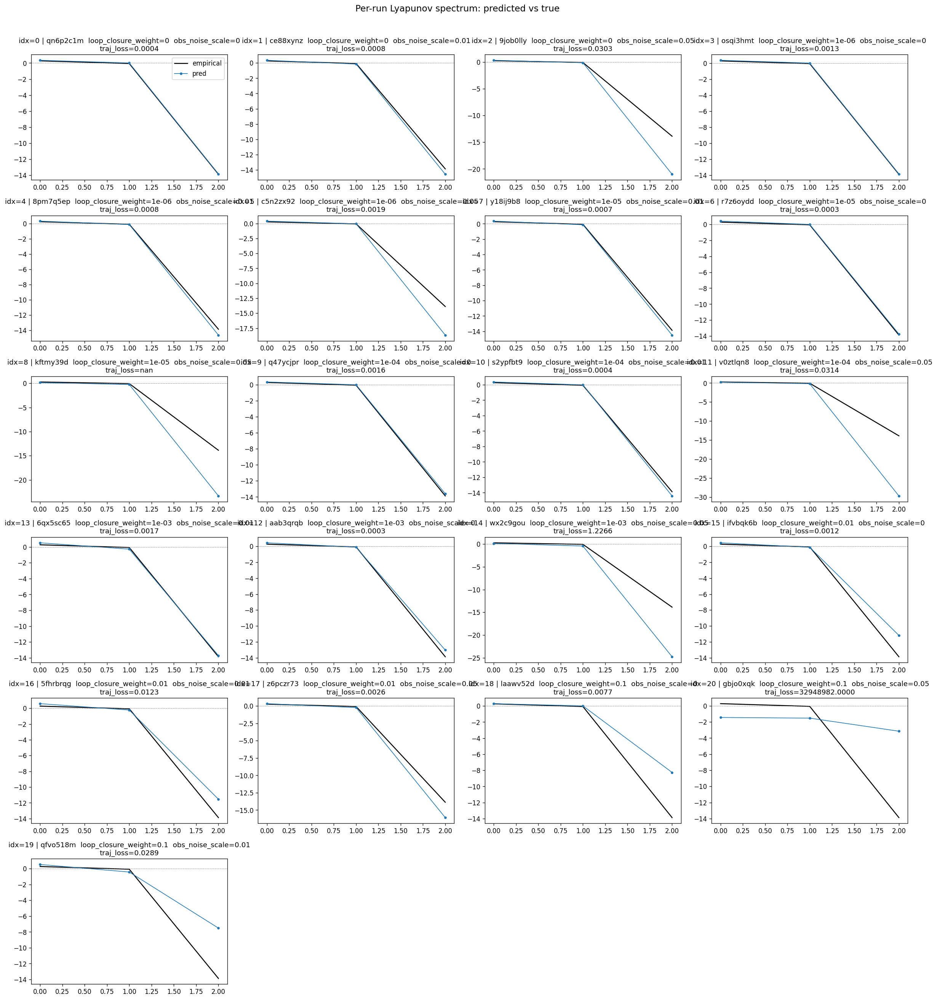
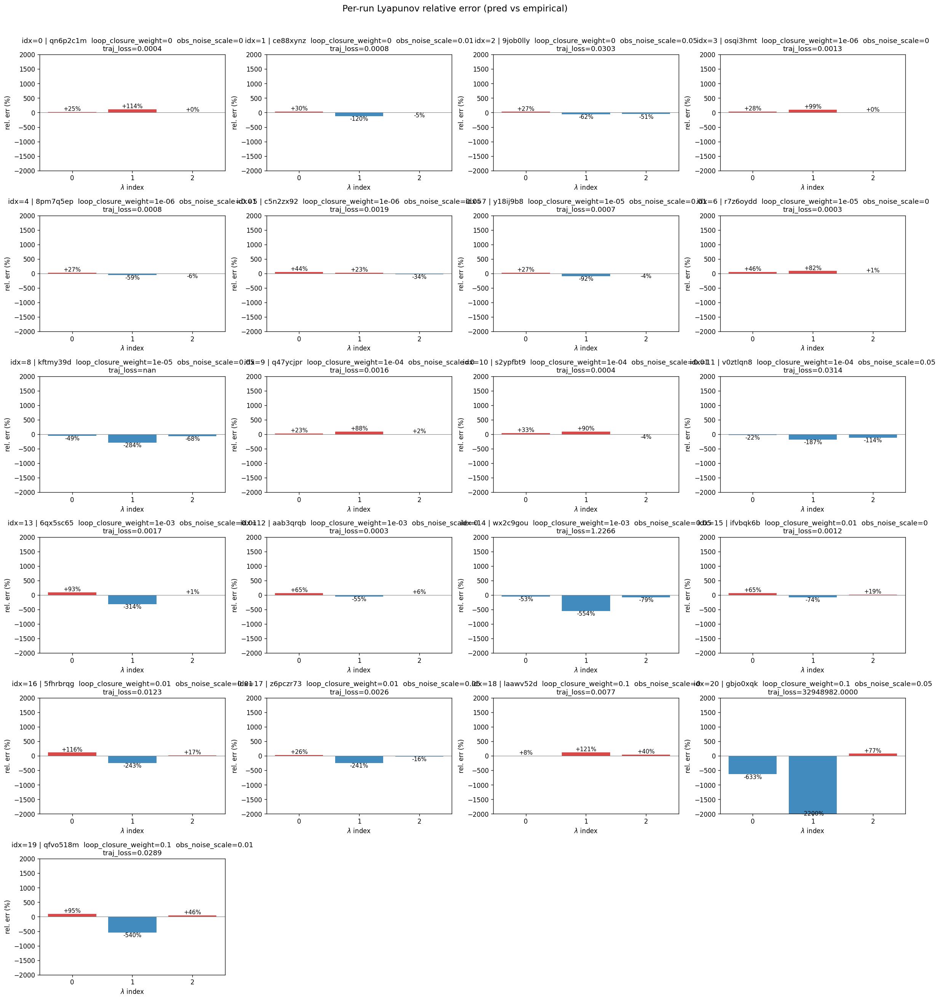
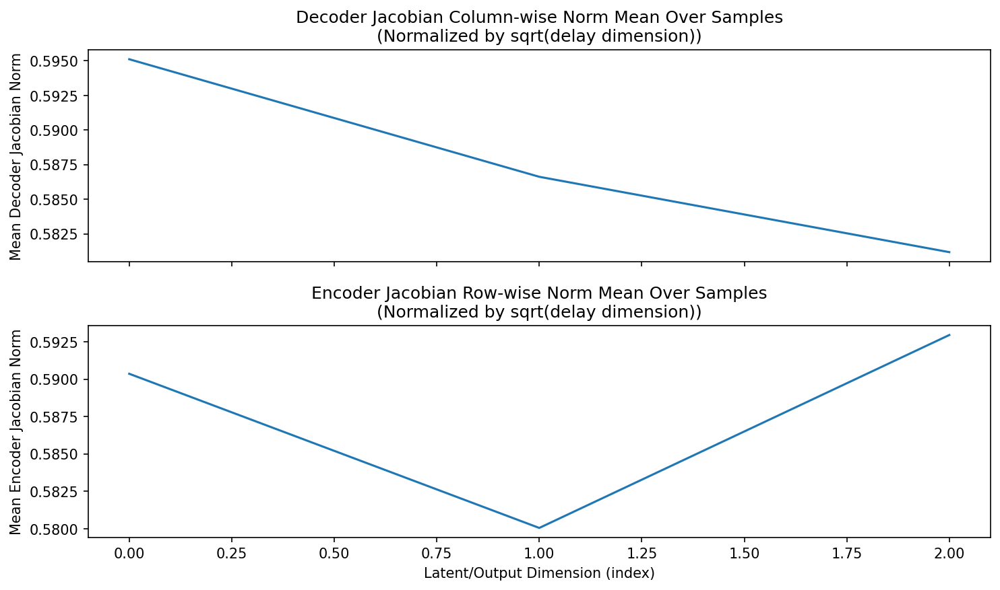
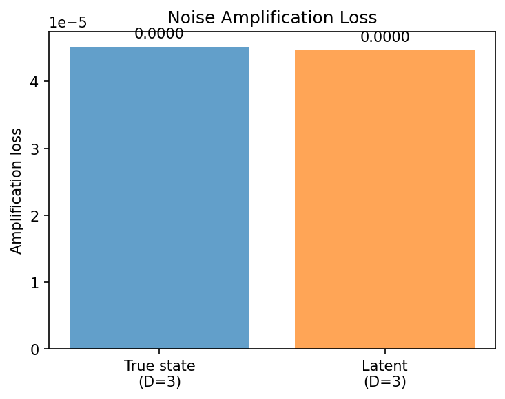
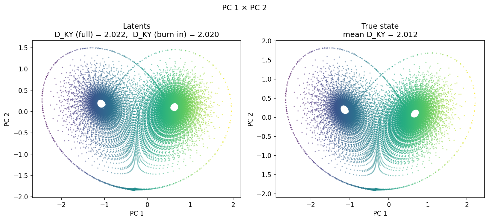
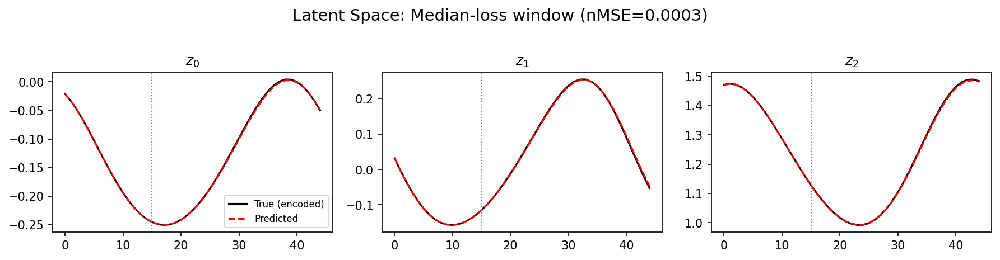
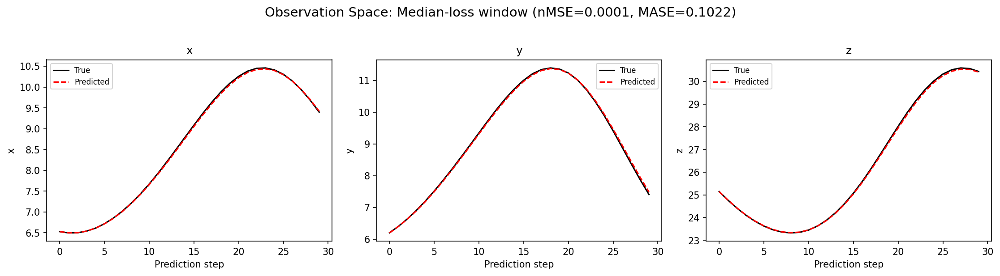
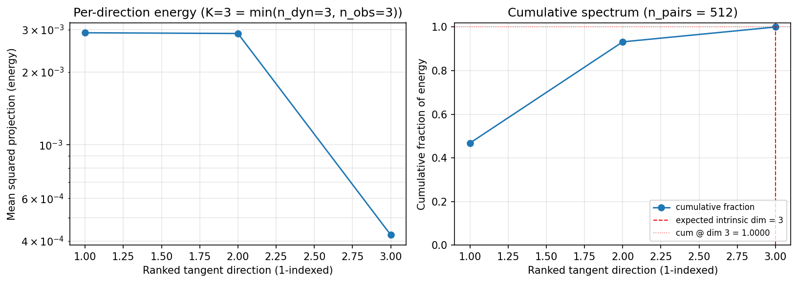
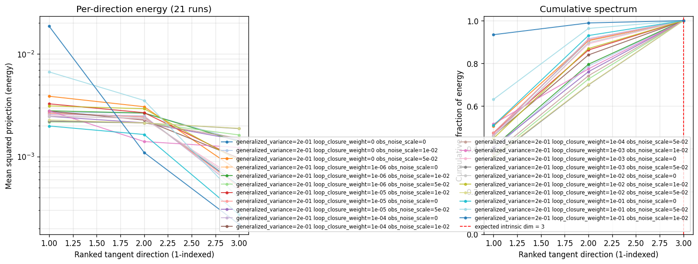
(to be written)
run_analytics stdoutrun_analyticsNo run_id provided — selecting best run from group 'lorenz_full3_additive_p30_nearid_tf__lc_x_obsnoisescale_sweep_20260429T163249Z__stage_a' ...
Found 21 total runs in JacobianODE/Lorenz_INDall_N1_D1_NormTrue_T3__JacobianODE (group=lorenz_full3_additive_p30_nearid_tf__lc_x_obsnoisescale_sweep_20260429T163249Z__stage_a)
All runs (state, loop_closure_weight, tangent_entropy_weight, kl_dyn_weight):
qn6p2c1m: state=finished, lc=0.0, te=0.0, kl_dyn=0.0
ce88xynz: state=finished, lc=0.0, te=0.0, kl_dyn=0.0
9job0lly: state=finished, lc=0.0, te=0.0, kl_dyn=0.0
osqi3hmt: state=finished, lc=1e-06, te=0.0, kl_dyn=0.0
8pm7q5ep: state=finished, lc=1e-06, te=0.0, kl_dyn=0.0
c5n2zx92: state=finished, lc=1e-06, te=0.0, kl_dyn=0.0
y18ij9b8: state=finished, lc=1e-05, te=0.0, kl_dyn=0.0
r7z6oydd: state=finished, lc=1e-05, te=0.0, kl_dyn=0.0
kftmy39d: state=finished, lc=1e-05, te=0.0, kl_dyn=0.0
q47ycjpr: state=finished, lc=0.0001, te=0.0, kl_dyn=0.0
s2ypfbt9: state=finished, lc=0.0001, te=0.0, kl_dyn=0.0
v0ztlqn8: state=finished, lc=0.0001, te=0.0, kl_dyn=0.0
6qx5sc65: state=finished, lc=0.001, te=0.0, kl_dyn=0.0
aab3qrqb: state=finished, lc=0.001, te=0.0, kl_dyn=0.0
wx2c9gou: state=finished, lc=0.001, te=0.0, kl_dyn=0.0
ifvbqk6b: state=finished, lc=0.01, te=0.0, kl_dyn=0.0
5fhrbrqg: state=finished, lc=0.01, te=0.0, kl_dyn=0.0
z6pczr73: state=finished, lc=0.01, te=0.0, kl_dyn=0.0
laawv52d: state=finished, lc=0.1, te=0.0, kl_dyn=0.0
gbjo0xqk: state=finished, lc=0.1, te=0.0, kl_dyn=0.0
qfvo518m: state=finished, lc=0.1, te=0.0, kl_dyn=0.0
slurm_timeout_min not found in any run config — falling back to 180 min
Including qn6p2c1m (lc=0.0): use_all_runs=True (state=finished)
Including ce88xynz (lc=0.0): use_all_runs=True (state=finished)
Including 9job0lly (lc=0.0): use_all_runs=True (state=finished)
Including osqi3hmt (lc=1e-06): use_all_runs=True (state=finished)
Including 8pm7q5ep (lc=1e-06): use_all_runs=True (state=finished)
Including c5n2zx92 (lc=1e-06): use_all_runs=True (state=finished)
Including y18ij9b8 (lc=1e-05): use_all_runs=True (state=finished)
Including r7z6oydd (lc=1e-05): use_all_runs=True (state=finished)
Including kftmy39d (lc=1e-05): use_all_runs=True (state=finished)
Including q47ycjpr (lc=0.0001): use_all_runs=True (state=finished)
Including s2ypfbt9 (lc=0.0001): use_all_runs=True (state=finished)
Including v0ztlqn8 (lc=0.0001): use_all_runs=True (state=finished)
Including 6qx5sc65 (lc=0.001): use_all_runs=True (state=finished)
Including aab3qrqb (lc=0.001): use_all_runs=True (state=finished)
Including wx2c9gou (lc=0.001): use_all_runs=True (state=finished)
Including ifvbqk6b (lc=0.01): use_all_runs=True (state=finished)
Including 5fhrbrqg (lc=0.01): use_all_runs=True (state=finished)
Including z6pczr73 (lc=0.01): use_all_runs=True (state=finished)
Including laawv52d (lc=0.1): use_all_runs=True (state=finished)
Including gbjo0xqk (lc=0.1): use_all_runs=True (state=finished)
Including qfvo518m (lc=0.1): use_all_runs=True (state=finished)
Found 21 effectively-done sweep runs:
loop_closure_weight=0.0, tangent_entropy_weight=0.0, kl_dyn_weight=0.0 -> run_id=9job0lly
loop_closure_weight=0.0, tangent_entropy_weight=0.0, kl_dyn_weight=0.0 -> run_id=ce88xynz
loop_closure_weight=0.0, tangent_entropy_weight=0.0, kl_dyn_weight=0.0 -> run_id=qn6p2c1m
loop_closure_weight=1e-06, tangent_entropy_weight=0.0, kl_dyn_weight=0.0 -> run_id=8pm7q5ep
loop_closure_weight=1e-06, tangent_entropy_weight=0.0, kl_dyn_weight=0.0 -> run_id=c5n2zx92
loop_closure_weight=1e-06, tangent_entropy_weight=0.0, kl_dyn_weight=0.0 -> run_id=osqi3hmt
loop_closure_weight=1e-05, tangent_entropy_weight=0.0, kl_dyn_weight=0.0 -> run_id=kftmy39d
loop_closure_weight=1e-05, tangent_entropy_weight=0.0, kl_dyn_weight=0.0 -> run_id=r7z6oydd
loop_closure_weight=1e-05, tangent_entropy_weight=0.0, kl_dyn_weight=0.0 -> run_id=y18ij9b8
loop_closure_weight=0.0001, tangent_entropy_weight=0.0, kl_dyn_weight=0.0 -> run_id=q47ycjpr
loop_closure_weight=0.0001, tangent_entropy_weight=0.0, kl_dyn_weight=0.0 -> run_id=s2ypfbt9
loop_closure_weight=0.0001, tangent_entropy_weight=0.0, kl_dyn_weight=0.0 -> run_id=v0ztlqn8
loop_closure_weight=0.001, tangent_entropy_weight=0.0, kl_dyn_weight=0.0 -> run_id=6qx5sc65
loop_closure_weight=0.001, tangent_entropy_weight=0.0, kl_dyn_weight=0.0 -> run_id=aab3qrqb
loop_closure_weight=0.001, tangent_entropy_weight=0.0, kl_dyn_weight=0.0 -> run_id=wx2c9gou
loop_closure_weight=0.01, tangent_entropy_weight=0.0, kl_dyn_weight=0.0 -> run_id=5fhrbrqg
loop_closure_weight=0.01, tangent_entropy_weight=0.0, kl_dyn_weight=0.0 -> run_id=ifvbqk6b
loop_closure_weight=0.01, tangent_entropy_weight=0.0, kl_dyn_weight=0.0 -> run_id=z6pczr73
loop_closure_weight=0.1, tangent_entropy_weight=0.0, kl_dyn_weight=0.0 -> run_id=gbjo0xqk
loop_closure_weight=0.1, tangent_entropy_weight=0.0, kl_dyn_weight=0.0 -> run_id=laawv52d
loop_closure_weight=0.1, tangent_entropy_weight=0.0, kl_dyn_weight=0.0 -> run_id=qfvo518m
n_dims=3, n_latent=3, n_dyn=3, dt=0.0150
run=9job0lly: DiagnosticMetrics(one_step_mase=0.0728202611207962, loop_closure_loss=0.94355309009552, fast_eigenvalue_fraction=0.0, trajectory_val_loss=0.002811076585203409) (from W&B history)
run=ce88xynz: DiagnosticMetrics(one_step_mase=0.022798094898462296, loop_closure_loss=0.06262003630399704, fast_eigenvalue_fraction=0.0, trajectory_val_loss=0.000607253925409168) (from W&B history)
run=qn6p2c1m: DiagnosticMetrics(one_step_mase=0.00954161211848259, loop_closure_loss=0.06267660856246948, fast_eigenvalue_fraction=0.0, trajectory_val_loss=0.00016792197129689157) (from W&B history)
run=8pm7q5ep: DiagnosticMetrics(one_step_mase=0.02095170132815838, loop_closure_loss=0.05696834623813629, fast_eigenvalue_fraction=0.0, trajectory_val_loss=0.0005070432089269161) (from W&B history)
run=c5n2zx92: DiagnosticMetrics(one_step_mase=0.07726263254880905, loop_closure_loss=0.5424937605857849, fast_eigenvalue_fraction=0.0, trajectory_val_loss=0.0014674313133582473) (from W&B history)
run=osqi3hmt: DiagnosticMetrics(one_step_mase=0.009239597246050835, loop_closure_loss=0.047156915068626404, fast_eigenvalue_fraction=0.0, trajectory_val_loss=0.0001744173641782254) (from W&B history)
run=kftmy39d: DiagnosticMetrics(one_step_mase=0.09635493159294128, loop_closure_loss=0.5323993563652039, fast_eigenvalue_fraction=0.0, trajectory_val_loss=0.002490880200639367) (from W&B history)
run=r7z6oydd: DiagnosticMetrics(one_step_mase=0.011947923339903355, loop_closure_loss=0.015795456245541573, fast_eigenvalue_fraction=0.0, trajectory_val_loss=0.00021297768398653716) (from W&B history)
run=y18ij9b8: DiagnosticMetrics(one_step_mase=0.020458443090319633, loop_closure_loss=0.02657948061823845, fast_eigenvalue_fraction=0.0, trajectory_val_loss=0.0006309924065135419) (from W&B history)
run=q47ycjpr: DiagnosticMetrics(one_step_mase=0.011098829098045826, loop_closure_loss=0.0031410125084221363, fast_eigenvalue_fraction=0.0, trajectory_val_loss=0.0001383699127472937) (from W&B history)
run=s2ypfbt9: DiagnosticMetrics(one_step_mase=0.021325746551156044, loop_closure_loss=0.005470857489854097, fast_eigenvalue_fraction=0.0, trajectory_val_loss=0.00037638709181919694) (from W&B history)
run=v0ztlqn8: DiagnosticMetrics(one_step_mase=0.11005331575870514, loop_closure_loss=0.15686123073101044, fast_eigenvalue_fraction=0.0, trajectory_val_loss=0.00208758981898427) (from W&B history)
run=6qx5sc65: DiagnosticMetrics(one_step_mase=0.025487076491117477, loop_closure_loss=0.0043603722006082535, fast_eigenvalue_fraction=0.0, trajectory_val_loss=0.0005141532747074962) (from W&B history)
run=aab3qrqb: DiagnosticMetrics(one_step_mase=0.014027087949216366, loop_closure_loss=0.000938237237278372, fast_eigenvalue_fraction=0.0, trajectory_val_loss=0.00021569330419879407) (from W&B history)
run=wx2c9gou: DiagnosticMetrics(one_step_mase=0.0972466915845871, loop_closure_loss=0.04140852019190788, fast_eigenvalue_fraction=0.0, trajectory_val_loss=0.0027585888747125864) (from W&B history)
run=5fhrbrqg: DiagnosticMetrics(one_step_mase=0.07255454361438751, loop_closure_loss=0.0011047219159081578, fast_eigenvalue_fraction=0.0, trajectory_val_loss=0.0031213113106787205) (from W&B history)
run=ifvbqk6b: DiagnosticMetrics(one_step_mase=0.030803469941020012, loop_closure_loss=0.0014869256410747766, fast_eigenvalue_fraction=0.0, trajectory_val_loss=0.0011679537128657103) (from W&B history)
run=z6pczr73: DiagnosticMetrics(one_step_mase=0.04408523067831993, loop_closure_loss=0.0006477378192357719, fast_eigenvalue_fraction=0.0, trajectory_val_loss=0.0009560990147292614) (from W&B history)
run=gbjo0xqk: DiagnosticMetrics(one_step_mase=0.49270308017730713, loop_closure_loss=0.010451525449752808, fast_eigenvalue_fraction=0.0, trajectory_val_loss=0.10588298738002777) (from W&B history)
run=laawv52d: DiagnosticMetrics(one_step_mase=0.06106758117675781, loop_closure_loss=2.7636218874249607e-05, fast_eigenvalue_fraction=0.0, trajectory_val_loss=0.007672740146517754) (from W&B history)
run=qfvo518m: DiagnosticMetrics(one_step_mase=0.3610649108886719, loop_closure_loss=0.008142434060573578, fast_eigenvalue_fraction=0.0, trajectory_val_loss=0.02890561893582344) (from W&B history)
Ranking method: best_traj_loss
Best run ID: q47ycjpr
Best loop_closure_weight: 0.0001
Best tangent_entropy_weight: 0.0
Best kl_dyn_weight: 0.0
Best traj loss: 0.000138
Criteria applied: ['C1', 'C2', 'C3']
Surviving: 21 / 21
Auto-selected run_id: q47ycjpr
======================================================================
PARETO FRONTIER RUNS (4 runs)
======================================================================
Run ID LC Loss Traj Val Loss
------------ -------------- --------------
laawv52d 0.000028 0.007673
z6pczr73 0.000648 0.000956
aab3qrqb 0.000938 0.000216
q47ycjpr 0.003141 0.000138 <-- selected
======================================================================
RANKING METHOD COMPARISON (over 21 survivors)
======================================================================
Method Run ID LC Loss Traj Val Loss
---------------------- ------------ -------------- --------------
best_traj_loss q47ycjpr 0.003141 0.000138 <-- active
pareto_knee aab3qrqb 0.000938 0.000216
geo_rank q47ycjpr 0.003141 0.000138
minimax_rank aab3qrqb 0.000938 0.000216
geo_log_score q47ycjpr 0.003141 0.000138
minimax_log_score z6pczr73 0.000648 0.000956
======================================================================
Loading run q47ycjpr from JacobianODE/Lorenz_INDall_N1_D1_NormTrue_T3__JacobianODE ...
Loading checkpoint epoch=18-step=3800.ckpt...
Train dataset shape: torch.Size([25410, 45, 3])
Validation dataset shape: torch.Size([8085, 45, 3])
Test dataset shape: torch.Size([3465, 45, 3])
Train trajectories dataset shape: torch.Size([22, 1200, 3])
Validation trajectories dataset shape: torch.Size([7, 1200, 3])
Test trajectories dataset shape: torch.Size([3, 1200, 3])
Loading checkpoint epoch=18-step=3800.ckpt...
Computing reconstruction ...
Computing MASE ...
Teacher-forced MASE: 0.0105
Free-running MASE: 0.1210
Computing latent utilization ...
Entropy-based utilization: 0.968
Computing Lyapunov exponents ...
Computing full-trajectory Lyapunov (3 test trajs, T=1200) ...
Predicted Lyapunov exponents (batch+burn-in, 128 windowed trajs):
λ_1 = +0.3561 ± 0.3099
λ_2 = -0.0870 ± 0.1249
λ_3 = -13.4710 ± 0.1012
Predicted Lyapunov exponents (full-length, 3 test trajs):
λ_1 = +0.3256 ± 0.0593
λ_2 = -0.0329 ± 0.0448
λ_3 = -13.4645 ± 0.0045
Empirical Lyapunov exponents (mean ± std):
λ_1 = +0.2716 ± 0.0605
λ_2 = -0.1016 ± 0.0797
λ_3 = -13.8370 ± 0.0514
Mean KY dim (predicted): 2.022 ± 0.001
Mean KY dim (empirical): 2.012 ± 0.003
Mean KY dim (burn-in): 2.020 ± 0.019
Computing prediction windows ...
Windows: 117 — nMSE min=0.0000, median=0.0001, mean=0.0006, max=0.0331
Computing long-trajectory free-running rollouts ...
Computing encoder/decoder Jacobians ...
encoder_jacobian: (128, 3, 3)
decoder_jacobian: (128, 3, 3)
Computing amplification loss ...
Amplification loss — True state: 0.000045
Amplification loss — Latent: 0.000045
Computing tangent space spectrum ...